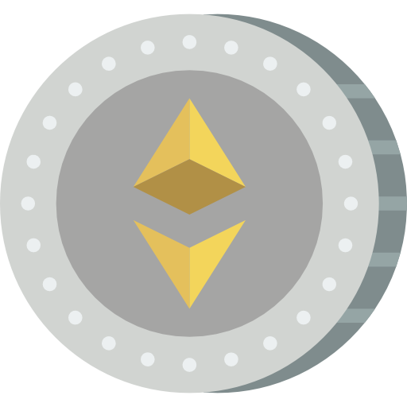
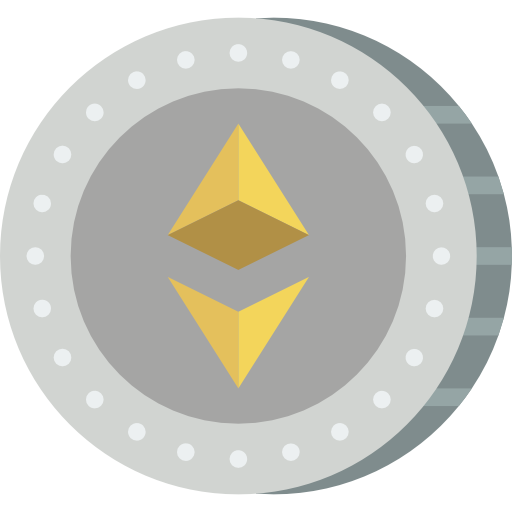

¿QUESO SON LAS CRIPTOMONEDAS? |
¿QUE ES BITCOIN? |
A diferencia de las operaciones y transferencias bancarias convencionales, las transacciones con criptomonedas funcionan de manera más transparente y rápida. Si bien el tiempo de cada transacción varía entre cada tipo de criptomoneda, al final termina siendo menor al «tiempo promedio» de las transferencias bancarias tradicionales.
Normalmente las transacciones que se realizan de forma internacional tienen tarifas elevadas, incluso algunas de ellas deben pagar ciertos impuestos, también existen casos de otros sistemas de pagos digitales que poseen costes relevantes. En el caso del bitcoin y otras criptomonedas, las transferencias que se realizan tienen un costo mínimo (el cual ronda entre el 1% aprox.) el cual es más bajo en comparación con otros medios de pago online del mercado (por ejemplo PayPal cobra una tarifa por transacción del 5.4% más 0.30 USD si se recibe dinero por bienes o servicios).
Cada operación que realizas con criptomonedas solo se da entre el usuario inicial y el usuario final.
La identidad del usuario siempre está oculta, a menos que él mismo quiera revelarla. A la hora de operar con criptomonedas únicamente se maneja una dirección de wallet de origen y otra de destino, de modo que no se necesitan datos personales de ninguno de los usuarios involucrados en la transacción, lo cual genera más confianza en esta metodología.
Si alguien quiere hacer un pago con criptomonedas únicamente necesita saber cuál es la billetera digital (wallet) a la que va a transferir, colocar el monto y autorizar la transacción, en cuestión de segundos, minutos u horas (dependiendo del tipo de criptomoneda) el dinero llegará a la billetera de destino de manera segura y verificable.
Esto significa que no existe una sola empresa o negocio detrás de las operaciones. Hay una red blockchain en la cual todos pueden participar y todos son responsables de la seguridad del dinero que allí opera.
Las transacciones que se han hecho con criptomonedas no se pueden revertir y el “libro contable” en el que están registradas (la cadena blockchain) está disponible siempre para todo el mundo, es decir, en cualquier momento se pueden consultar pero no pueden ser modificadas, pues el protocolo de seguridad implica que para que una transacción sea completamente válida debe ser aprobada por varios entes de la cadena y debe contener unos parámetros mínimos que están enlazados entre sí, esto hace casi imposible que algún dato se pueda alterar para aumentar o disminuir registros.